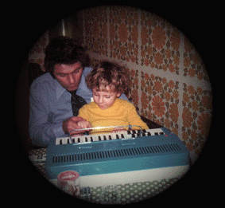

Les images du site sont en milliers de couleurs, le site est visuable à partir de la résolution 800 x 600.
L'auteur
du site se découvre devant vous ...

Papa
et moi tout petit.
Aujourd'hui j'ai 31 ans et j'ai comme formation pricipale l'électronique et l'informatique. Je possède un parc informatique de machines des années 80-90 qui ont bercées ma jeunesse, jugé plutot :
un ATARI STF+ :
1 Mo de mémoire (extension de 512 Ko de mémoire implanté sur le Blitter)
un Blitter (accélération graphique)
le son stéréo ( 3 voies ) pour les soundchips
une sortie son jack 3.5 stéréo
le Freeboot (qui permet de booter sur la face A ou B d'une disquette)
équipé de 2 TOS (BITOS) : 1.40 / 2.06 switchable
boitier de couleur NOIR (même la souris ?)
un ATARI STF avec 1 Mo (avec pleins de 41256 sous l'alim...)
un ATARI STE avec 4 Mo + FD externe + carte son STEREO MASTER + moniteur couleur
un AMIGA 500+ avec 1 Mo + FD externe + moniteur 1084S
un AMSTRAD CPC 464 (écran couleur)
Mon site parle principalement de :
Qu'est ce qu'un ordinateur ATARI ST :
Un peu d'histoire sur l'ordinateur
Un peu d'hardware
Un mini glossaire technique
Le TOS de l'ATARI ST :
Un peu de technique GEM
Les différents TOS de l'Atari STF/E
Des patchs pour les TOS de l'Atari STF/E
Des captures d'écrans des différents bureaux du ST
La Galerie Atari :
C'est plus de cinquante captures d'écrans
Une dizaine de fichiers zippés (contenant des images de disk ou des programmes Atari)
Les compiles de démos ST les plus connues
Les minis démos ou dentros (ajout des sections MAD VISION et TSK)
Les magazines qui ont traités de l'Atari
Tous les trackers sur ST ainsi que les players de modules
Une nouvelle section "DIVERS" où l'on peu télécharger divers programmes (logiciels graphiques, antivirus, différents tos...)
Une autre nouvelle section UTILS qui contient pas mal de petits logiciels pour Atari ST
Le GFA Basic :
Un petit peu d'histoire sur le GFA BASIC
Des routines GFA commentées
Pleins de GFA-PUNCHS de ST-MAG à télécharger et à essayer
Le jukeBox aux modules :
Le site est hébergé sur un autre serveur
Pleins de modules ATARI/AMIGA/PC à écouter ou à télécharger
Des players et trackers pour PC à télécharger
Des liens vers d'autres sites
Mes liens :
Une quantité de liens sur l'Atari (uniquement) mise à jour fréquement
Java VersuS GFA Basic :
Des démos codées en Java pour ne pas oublier le GFA-BASIC et les démos Atari
Des commentaires sur les différentes démos
Moteur de recherche :
Recherche active dans le site (2ème version du moteur à indexation en PHP)
MJJPROD :Page sur les prods faites avec le groupe dont je suis l'un des codeurs
GUESTBOOK :
Histoire de laisser un petit mot pour le webmaster
Quoi de neuf :
Une petite pop-up d'actu sur les dernières mise-à-jour du site
LES INTROS :
Une multitude de captures d'écrans sur les intros/dentros de jeux crackès d'hier et d'aujourd'hui
Une petite compile perso d'intros/dentros dont l'intro a été fait en GFA BASIC
Différentes notes de l'auteur :
Toutes les musiques sur les pages sont de courts extraits de soundchips de démos ou de jeu (Wings of death) numérisés à partir d'un Atari STE
Je cherche des amateurs qui codent des applets Java pour finir des démos pour agrémenter la section JAVA.
| Le
logo
La Bonne Methode
assure la bonne qualité
du site. Les images du site sont en milliers de couleurs, le site est visuable à partir de la résolution 800 x 600. | |
| | Le site est garantie 60% fait avec NOTEPAD, 40% avec Dreamweaver 4. |
| Mise-à-jour du site le 30 septembre 2002. | |